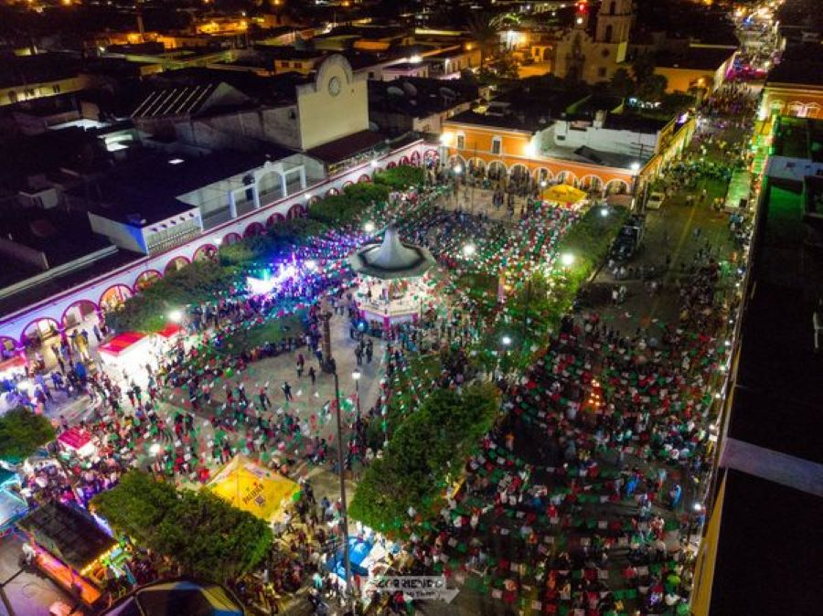
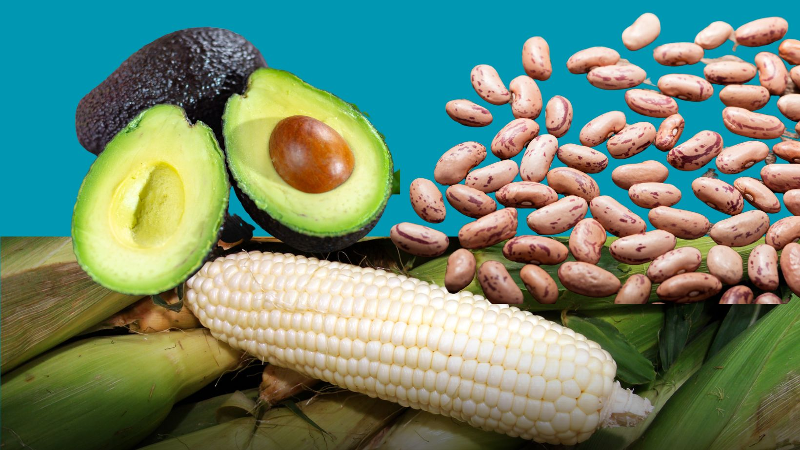

UBICACIÓN: Situado en la región sur de Nayarit, Ixtlán del Río se encuentra estratégicamente ubicado junto a la carretera federal 15, lo que lo convierte en un punto de conexión importante entre Guadalajara y Tepic.
HISTORIA: Ixtlán del Río se caracterizó por su fertilidad, lo que atrajo el interés de las tribus Chimalhuacanas en el año 850 d.C. La región cuenta con importantes yacimientos de obsidiana, utilizados para objetos ceremoniales y herramientas. También destacan las construcciones prehispánicas en el sitio conocido como Los Toriles, único por su templo circular dedicado al dios del viento, Ehécatl, y las tumbas de tiro en el territorio. Durante la época colonial, Ixtlán del Río adquirió importancia por su ubicación estratégica y riqueza minera, comercial y artesanal.
FIESTAS: La Feria de Ixtlán es uno de sus principales eventos, que incluye celebraciones religiosas, deportivas y culturales.
PRODUCCIÓN: La economía del municipio se basa en el cultivo de aguacate y maíz, el comercio local y los servicios. También destaca su artesanía tradicional.
